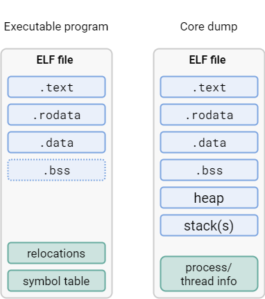
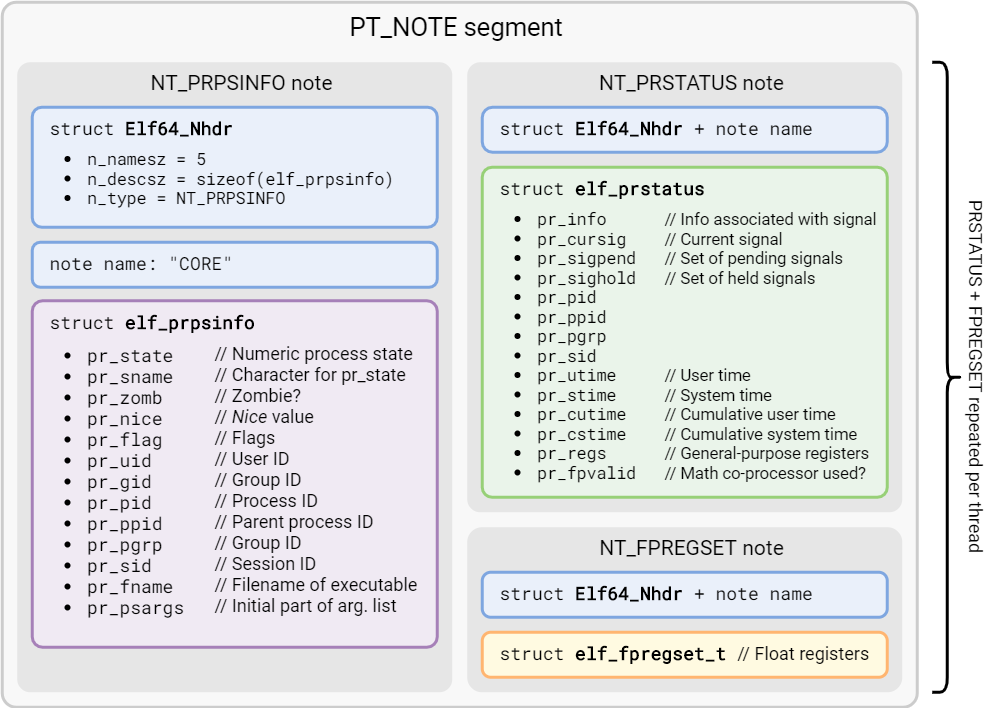
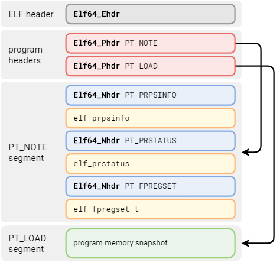

Generating core dumps for bare-metal AArch64 programs
Introduction
Bare-metal 64-bit ARM programming is a strange niche: small, power-efficient microcontrollers usually implement the – considerably simpler – 32-bit version of the architecture. And on larger chips, one would typically run their application under a full-blown OS, namely Linux. Yet, there are cases where one needs the raw performance of an advanced 64-bit CPU, but a standard OS, despite all efforts to tune it, would bring in too much timing uncertainty for real-time process control.
Welcome to CERN, where standard approaches don’t quite cut it, and state of the art is yesterday’s news. The FGC4, a new digital controller in development by the Electrical Power Converters group has exactly this kind of requirements.
Debugging these kinds of systems can be… interesting. There is a whole spectrum of mechanisms that one might have at their disposal, depending on choices made in the system design – from the simplicity of the blinking LED, the versatility of a serial output, to the sophistication of a JTAG adapter. But once the device is out in the field, you cannot guarantee to be present when an error occurs. The best you can do is to log it in the maximum detail possible, and attempt to understand the issue later. Fortunately, there is a standard mechanism for that – the core dump. Unfortunately, it is not readily available in environments like the one described in this post.
What is a core dump?
A core dump is a snapshot of the state of a process, usually at the time it crashed. The idea is that you can take this snapshot, load it up in a debugger, and inspect the process as if the error had occurred just moments ago. The most precious piece of knowledge to recover is perhaps the stack trace; however, the ability to inspect the program’s variables can certainly be useful as well.
Unfortunately, while a core dump is the de-facto standard way of capturing process state, its format is actually dependent on the host operating system (as is the case for executables). But on bare metal, there is no OS. No OS, no core dump – right? Well, consider this: what if we could pretend to be running an OS, and synthesize the core dump file accordingly? Then we could use all the standard tools to analyze it and extract useful information.
Anatomy of a core dump
Interestingly, on Linux the same ELF format used for executables and libraries is used as a container for the core dump. They even use the same program headers to describe memory segments, although things begin to diverge beyond that. Before diving deeper into the specifics, let’s take a look at what such a dump contains:
- A data structure giving basic information about the process, such as its PID or argument list
- A snapshot of the process’ memory, including code, global variables, thread stacks and the heap
- For each thread:
- A structure giving basic information
- A copy of the CPU state, including general-purpose and floating-point registers
For better illustration, let’s draw a comparison between a core dump and a standard executable. An ELF executable usually includes these sections:
.text(executable code).rodata(read-only data).data(initialized data).bss(zero-initialized data); since the contents of this section are known to be all zeroes, it is not necessary to physically include them in the file
When you use GDB to save a core dump, it will contain a copy of all of these, plus the program heap and stacks of all threads.

This has been a simplification, and to correctly synthesize a core dump, we have to be a bit more precise:
The core dump will indeed contain a snapshot of memory corresponding to the sections mentioned above,
however, this snapshot is described by one or more PT_LOAD segments rather than sections; names and other attributes of sections are therefore lost.
This is not a problem, because we can extract section information from the original executable file.
Process & thread information
An ELF-encoded core dump also contains a PT_NOTE segment providing some general information about the process and its threads.

PT_NOTE segmentInspecting a core dump
To extract useful information from a core dump, the original ELF file of the program is also required. This is because the core dump does not contain information about symbols, let alone mappings from compiled code to source locations. With a core file in hand, we can execute
$ gdb program.elf core
This will start GDB, load the program ELF file and combine it with the information found in the core file. This article is not meant as a GDB tutorial, but in case you need a rundown, this one is quite nice. What matters to us here is the observation that information contained in the core dump is “overlaid” on top of the original executable.
Writing our own
Impedance mismatch
There are some discrepancies between the Linux model and a bare-metal application. For example, there is no concept of Process ID or a command line. We also assume a single thread of execution. That might not always be the case; one might, for example, want to capture the state of a multi-threaded FreeRTOS application.
Another difference is that of address spaces: Linux processes always execute in virtual memory, while a bare-metal program would use physical memory directly. In practice, it’s not really a problem. All that matters is that the addresses agree between the ELF of the program and the dumped image. As long as we do not move the program around when loading it, this will indeed be the case.
Collecting information
A core dump would usually be emitted in response to a program crash. Under an operating system with memory protection, it is well-defined what a program is allowed to do. On bare metal, the possibilities are much wider and there are footguns aplenty. Without going too much into detail, one symptom of a critical problem on AArch64 can be a Synchronous exception. If the goal is to produce a dump, it is important to save all general-purpose registers (GPRs) on exception entry instead of just caller-saved ones, as is often done before calling an exception handler written in C/C++. You can see an example here, but it will probably require adapting to your specific application.
Besides the GPRs, we also need to gather the contents of floating-point registers, and finally, we need to know which region(s) of memory are relevant to the program.
Writing the core file
With all the inputs on hand, we can move on to assembling the actual file. ELF is not the simplest format to write manually (without the use of any libraries), but in this case the structure will be simple enough. To begin, we need a copy of elf.h (careful about the license, though) to provide the structures and constants. A slight complication here lies in the fact that we have to precompute all the offsets and sizes. Let’s begin by visualizing the physical layout of the file we are going to write:

First comes the ELF file header. Not much surprising here. Note the file type of ET_CORE.
FILE* elf = fopen("core", "wb");
// ELF header
Elf64_Ehdr ehdr {};
ehdr.e_ident[0] = ELFMAG0;
ehdr.e_ident[1] = ELFMAG1;
ehdr.e_ident[2] = ELFMAG2;
ehdr.e_ident[3] = ELFMAG3;
ehdr.e_ident[4] = ELFCLASS64;
ehdr.e_ident[5] = ELFDATA2LSB;
ehdr.e_ident[6] = EV_CURRENT;
ehdr.e_type = ET_CORE;
ehdr.e_machine = EM_AARCH64;
ehdr.e_version = EV_CURRENT;
ehdr.e_phoff = sizeof(ehdr);
ehdr.e_ehsize = sizeof(ehdr);
ehdr.e_phentsize = sizeof(Elf64_Phdr);
ehdr.e_phnum = 2;
ehdr.e_shentsize = sizeof(Elf64_Shdr);
fwrite(&ehdr, 1, sizeof(ehdr), elf);
Next, we will need to write two program headers: one for the memory snapshot (it can, in fact, come in multiple segments, but we’re keeping things simple) and one for the PT_NOTE segment described previously. Some complexity comes from the computation of the segment size and the need to align the snapshot to page size.
Elf64_Phdr phdr {};
// NOTE segment
phdr.p_type = PT_NOTE;
phdr.p_offset = sizeof(Elf64_Ehdr) + ehdr.e_phnum * sizeof(phdr);
phdr.p_filesz = sizeof(Elf64_Nhdr) + 8 + sizeof(elf_prpsinfo) +
sizeof(Elf64_Nhdr) + 8 + sizeof(elf_prstatus) +
sizeof(Elf64_Nhdr) + 8 + sizeof(elf_fpregset_t);
fwrite(&phdr, 1, sizeof(phdr), elf);
// LOAD segment (memory image)
// First, compute alignment after previous segment
phdr.p_align = 4096;
auto note_align = phdr.p_align - ((phdr.p_offset + phdr.p_filesz) % phdr.p_align);
if (note_align == phdr.p_align)
{
note_align = 0;
}
phdr.p_type = PT_LOAD;
phdr.p_flags = PF_R | PF_X | PF_W;
phdr.p_offset += phdr.p_filesz + note_align;
phdr.p_vaddr = MEMORY_SNAPSHOT_ADDR;
phdr.p_paddr = 0;
phdr.p_filesz = MEMORY_SNAPSHOT_SIZE;
phdr.p_memsz = MEMORY_SNAPSHOT_SIZE;
fwrite(&phdr, 1, sizeof(phdr), elf);
We don’t need to write any sections, so after the program headers we immediately proceed with the note segment. The alignment/padding convention here justifies writing a couple of helper functions first:
template<size_t alignment>
static auto make_padding_span(size_t length)
{
static const std::byte zeros[alignment - 1] {};
auto padding_needed = (length % alignment) == 0 ? 0 : (alignment - length % alignment);
return std::span{zeros, padding_needed};
}
static bool write_note(FILE* f,
const char* name,
Elf64_Word type,
std::span<std::byte const> desc)
{
auto terminated_name_len = strlen(name) + 1;
auto nhdr = Elf64_Nhdr { .n_namesz = (Elf64_Word) terminated_name_len,
.n_descsz = (Elf64_Word) desc.size(),
.n_type = type };
auto name_padding = make_padding_span<4>(terminated_name_len);
if (fwrite(&nhdr, 1, sizeof(nhdr), f) != sizeof(nhdr)
|| fwrite(name, 1, terminated_name_len, f) != terminated_name_len
|| fwrite(name_padding.data(), 1, name_padding.size(), f) != name_padding.size()
|| fwrite(desc.data(), 1, desc.size(), f) != desc.size())
{
return false;
}
return true;
}
Now for the main show:
// Process information (we leave most fields set to zero)
elf_prpsinfo prpsinfo {};
strncpy(prpsinfo.pr_psargs, "bare-metal application", sizeof(prpsinfo.pr_psargs));
write_note(elf, "CORE", NT_PRPSINFO, std::as_bytes(std::span{&prpsinfo, 1}));
// Thread status and integer registers
elf_prstatus prstatus {};
prstatus.pr_pid = 1;
memcpy(&prstatus.pr_reg, &saved_gp_registers, sizeof(saved_gp_registers));
write_note(elf, "CORE", NT_PRSTATUS, std::as_bytes(std::span{&prstatus, 1}));
// FPU registers
write_note(elf, "CORE", NT_FPREGSET, std::as_bytes(std::span{&saved_fp_registers, 1}));
Finally, write the memory image, respecting the alignment calculated earlier:
if (note_align)
{
char scratch[note_align];
memset(scratch, 0, sizeof(scratch));
fwrite(scratch, 1, sizeof(scratch), elf);
}
fwrite((void*) MEMORY_SNAPSHOT_ADDR, 1, MEMORY_SNAPSHOT_SIZE, elf);
And that’s it! You can find the complete code in this Gist.
As for testing, here is a tip: GDB can be used to extract information from a core dump non-interactively – useful for unit tests, et cetera:
$ gdb --batch -n -ex bt <program> <core>
warning: core file may not match specified executable file.
[New LWP 1]
Core was generated by `bare-metal application'.
#0 0x0000000078020d8c in access_invalid_memory () at access_violation.cpp:8
#1 0x0000000078020db0 in main (argc=<optimized out>, argv=<optimized out>) at access_violation.cpp:23
Backtrace stopped: previous frame inner to this frame (corrupt stack?)
See also
- Linux core dump
specificationhaha! code - Google Coredumper
- Executable and Linking Format (ELF) Specification
- ELF for the Arm® 64-bit Architecture (AArch64)